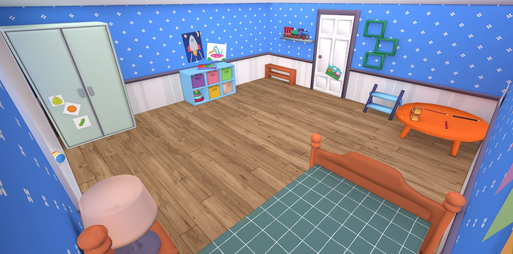
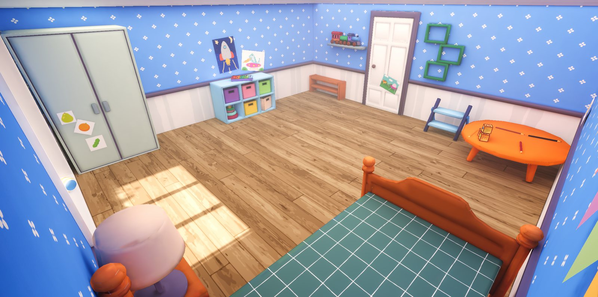

BEFOREAFTERBedroom lighting rig
LITTLE MAYOR · 2026
The whole game takes place on a kid's bedroom floor, so the light has to feel like a real room at different times of day.
- Baked lighting with a skylight area fill and a warm volume profile
- Day/night ambience pass, with menu and gameplay scenes rebaked to match
- Kept cheap enough for the WebGL demo build
URPBaked GIPost-processing